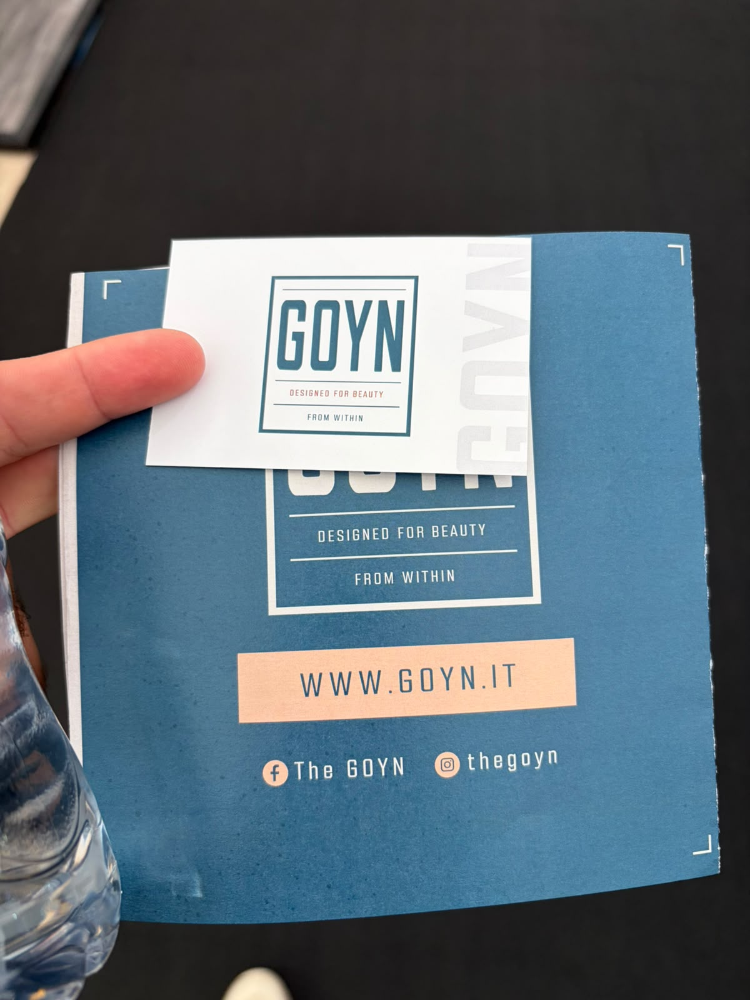
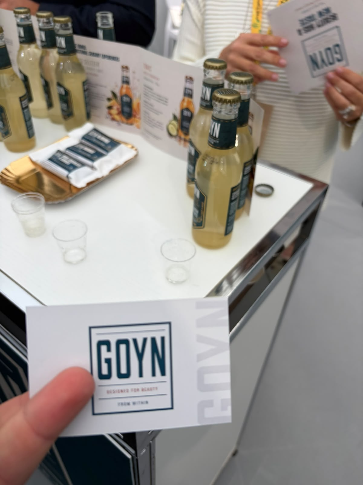

GOYN
مشروبات معروضة
الوكيل الحصري في السعودية
لم يُعثر في البحث العام على دليل موثوق يثبت وجود وكيل حصري لهذه الشركة في السعودية أو ينفيه. لا تُعدّ السوق متاحة حصريًا قبل رد الشركة.
- الجهة
- لم تُثبت جهة سعودية محددة
- نطاق الدليل
- GOYN
- تاريخ البحث
- 21 أكتوبر 2026
الخطوة التالية: طلب تأكيد مكتوب باسم الوكيل، ونطاق السعودية، والعلامات والأصناف وقنوات البيع، وسريان الحصرية.
النتائج العامة محدودة، وتعذر استخراج محتوى كافٍ من الموقع المرجعي؛ النتيجة غير محسومة وتحتاج رد الشركة.
المصادر وطريقة التحقق
- الموقع المرجعي للشركة / صفحة التواصل
مرجع للاستفسار المباشر؛ ليس شهادة بعدم وجود وكيل.
بحث باسم الشركة والعلامات مع السعودية والتوزيع والوكالة، ومراجعة المصادر العامة المتاحة. لم يتم التواصل مع الشركة أو الاطلاع على عقد وكالة.
المنتجات والمجال
- زجاجات مشروبات تحمل GOYN
- وصف الكتيب: Designed for beauty from within؛ لم تظهر المكونات أو النكهات بوضوح
بطاقة الملف
الجناح
غير ظاهر في الصور
العنوان
غير موضح
حالة المتابعة
بيانات مجمعة — لم يبدأ التواصل من هذا الملف
وسائل التواصل
غير ظاهر
Instagram: @thegoyn · Facebook: The GOYN
الموقع وحسابات التواصل مطبوعة على الكتيب في الصورة 22
الموقع وحسابات الكتيب
الموقع وحسابات الكتيب
الموقع والحسابات من الكتيب المصور؛ تعذر التحقق المباشر من الموقع. لم يثبت بريد أو هاتف.
https://goyn.it
ملاحظات الملف
لا يوجد بريد أو هاتف مقروء في الصور. التواصل المتاح عبر الموقع أو الحساب المطبوع وطلب مسؤول التصدير.
أوصاف المنتجات والفوائد الواردة على العبوات منسوبة للمصنع، وليست تقييمًا طبيًا أو اعتمادًا للتوريد.
الصور وبطاقات الأعمال
اضغط على الصورة لفتح الأصل بالحجم الكامل.



